Brandon L. Hearley, Steven M. Arnold
National Aeronautics and Space Administration
Glenn Research Center
Cleveland, Ohio 44135
Abstract
PyCOMPARE is a Python-based program that offers users a front-end graphical user interface (GUI) to the COMPARE (Constitutive Material Parameter Estimator) core. The COMPARE core software is used to optimize constitutive material parameters for the GVIPS (Generalized Viscoplasticity with Potential Structure) model given sufficient rate-dependent, isothermal experimental data that characterizes the viscoelastoplastic material response to loading. The PyCOMPARE software enables users to easily upload materials test data to the program, automatically reduce test data by individual load stage for the COMPARE core, perform parameter optimization, compare model predictions to experimental data, and export data for use in material modeling. PyCOMPARE offers two different material models: GVIPS ISO and GVIPS TISO for isotropic and transversely isotropic materials, respectively. GVIPS ISO contains viscoelastic and viscoplastic modeling options with and without damage, and GVIPS TISO contains an elastic model and viscoplastic model without damage. This document serves as the user manual for navigating the GUI, uploading test data, characterizing models, and exporting data.
1. Overview
2. Navigating the User Interface
3.Database Tab
4. Characterization Tab
5. Optimize Model Tab
6. Analyze Model Tab
7. Visualization Tab
8. Export Tab
9. Settings Tab
1. Overview
PyCOMPARE is a Python-based program that offers users a graphical user interface (GUI) using the tkinter package [1] for running the COMPARE (Constitutive Material Parameter Estimator) core. The COMPARE core software [2, 3] offers a rapid methodology for estimating material parameters for isotropic and anisotropic viscoelastoplastic constitutive models given available isothermal experimental test data by i) performing primal analysis for the differential form of the model, ii) performing sensitivity analysis on the internal variables with respect to one another and iii) performing gradient-based, non-linear multi-objective optimization on the material parameters. The COMPARE core therefore offers users a robust and efficient means of estimating complex material parameters that can be used in viscoelastic and viscoplastic material simulations.
PyCOMPARE is configured to estimate parameters for the GVIPS (Generalized Viscoplasticity with Potential Structure) model, a phenomenological constitutive material model based on continuum-mechanics theories which uses the principles of thermodynamics for irreversible processes [4, 5, 6, 7]. The GVIPS model is a coupled, fully associative unified viscoelastoplastic model, suitable for both isotropic and anisotropic materials in both deformation and damage, and has been formulated generally to enable introduction of multiple viscoelastic and viscoplastic mechanisms to govern time-dependent reversible and irreversible material behavior, respectively. This generalized formulation allows the GVIPS model to reduce to classical rate-independent and rate-dependent elastic and plastic material materials by deactivating specific parameters during the COMAPRE optimization objective [8], thus demonstrating the flexibility and applicability of GVIPS.
The PyCOMPARE software helps facilitate running the COMPARE core to estimate GVIPS material parameters by offering a GUI that enables users to i) upload experimental test data, ii) define which experiments are used for model parameter optimization and their weights, iii) systematically set the reduced response curve points for optimization efficiency, iv) define the material model and number of viscoelastic and viscoplastic mechanisms, v) run the COMPARE core to optimize the material parameters, vi) simulate material response given estimated material parameters, vii) visualize model predictions against the experimental data for tests in both the characterization and verification data sets, and viii) export material models, experimental curves, reduced response curves, and predictions. This document serves as the user’s manual for navigating the PyCOMPARE GUI, creating PyCOMPARE projects, and determining material parameters using the COMPARE core. Each section gives an overview of the features and capabilities of a different aspect of the GUI, separated by navigable tabs within the user interface.
2. Navigating the User Interface
The PyCOMPARE UI features a toolbar for PyCOMPARE project management and a series of tabs for defining experimental data, optimizing or analyzing a GVIPS model, visualizing predictions, exporting data, and changing project settings (Figure 1). The toolbar at the top left of the screen contains two menus:
File
The file menu is used for overall project management. PyCOMPARE projects are saved with a *.cmprj file extension. Five options are available within the file menu:
New
Create a new PyCOMPARE project. The user is prompted to enter the name of the new project. All data in the workspace will be cleared. If data is currently loaded into the UI and associated with a project, the user will be prompted to save to original project.
Open
Open an existing PyCOMPARE project. If data is currently loaded into the UI and associated with a project, the user will be prompted to save to original project.
Save
Save a PyCOMPARE project. If the project file name is not already defined, the user will be prompted to name the project.
Save As
Save a PyCOMPARE project to a new name. The user is prompted to enter the name of the new project. All future saves will be written to the new project name.
Exit
Exit the program. The user will be prompted to save any data.
Help
The help menu is used to display the user manual. One option is available within the help menu:
About
Display the user manual.
Figure 1. PyCOMPARE Toolbar and Tabs
3. Database Tab
The Database tab allows users to upload experimental test data to their PyCOMPARE project (Figure 2). Data is uploaded to the project using the “Upload from Excel” button. The required import excel template can be downloaded from the Settings tab.
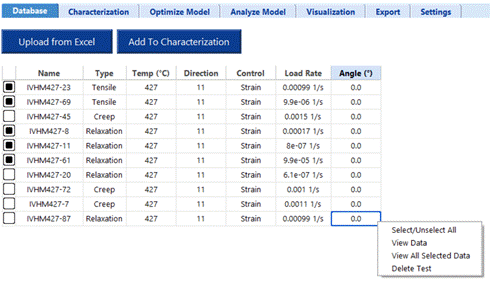
Figure 2. Database Tab: Uploading Test Data
For each test uploaded to the project, a row is added to the database table. Selecting the checkbox in the first column allows a test to be added to the characterization data set, which is used to optimize the GVIPS parameters. All tests added to the characterization set must be at the same temperature. If multiple temperatures are selected, the user will be prompted to only select one. Tests are only added to the characterization set after pressing the “Add to Characterization” button. Right clicking on any individual row of the database table gives the user four options:
Select/Unselect All
Select or unselect all checkboxes.
View Data
View the time, strain, and stress curves for a selected test (Figure 3). The x and y axes quantities can be changed using the drop down menus and “Plot” button above the curve. The stage information for each stage during the test is displayed under the database table.
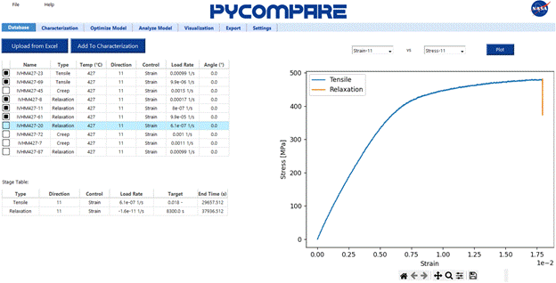
Figure 3. Database Tab: View Data
View All Selected Data
View the stress vs strain curve for all selected tests (Figure 4). Users can view selected tests together by test type, or view all test types, using the drop down menu and “Plot” button above the curve.
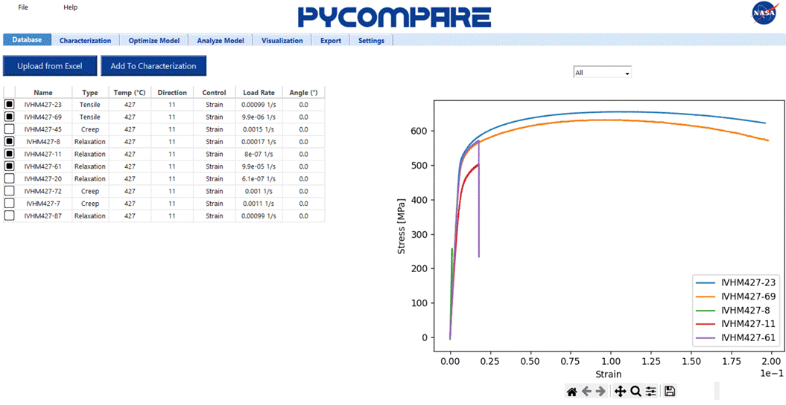
Figure 4. Database Tab: View All Selected Data
Delete Test
Delete a test from the database. This will permanently delete the test from the project.
4. Characterization Tab
The Characterization tab allows users to view the experimental test data in their PyCOMPARE project used for characterizing the model, reducing data, and assigning weights to each test (Figure 5).
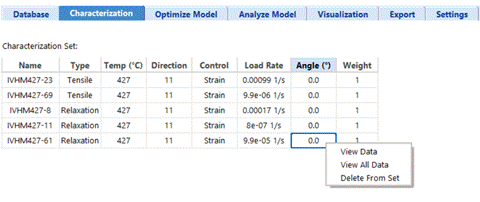
Figure 5. Characterization Tab: Viewing the Characterization Test Set
Each test in the characterization set is added to the characterization set table. Only the “Weight” column can be changed. Weights are assigned relatively (i.e., 2 is twice as important as 1). Right clicking on any individual row of the characterization set table gives the user three options:
View Data
View the time, strain, and stress curves for a selected test (Figure 6). The x and y axes quantities can be changed using the drop down menus and “Plot” button above the curve. The stage information for each stage during the test is displayed under the database table.
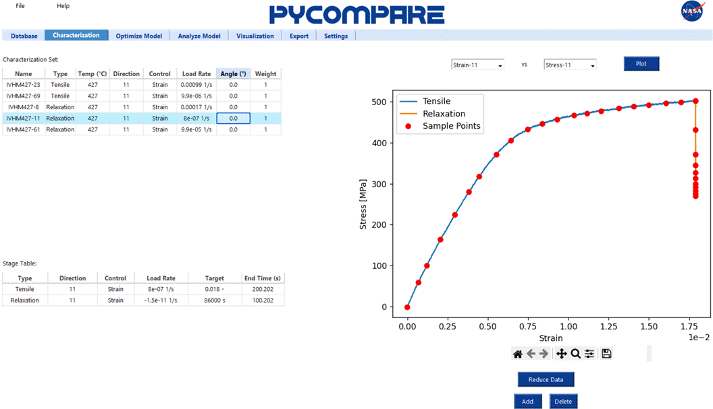
Figure 6. Characterization Tab: View Data
Selecting View Data also enables the user to set the data reduction points, displayed with red markers. Users can automatically set equally spaced data reductions points by pressing the “Reduce Data” button, which launches the Segmentation Control Panel (Figure 7a). For each stage user enters the number of desired data reduction points. Pressing the “Get Data Points” button automatically generates the data reduction points. Tensile stage points are equally spaced in normalized stress vs strain space, Creep stage points are equally spaced in normalized strain vs time space, and Relaxation stage points are equally spaced in normalized stress vs time space. Data reduction points can be manually added or deleted using the “Add” and “Delete” buttons, respectively. After the “Add” button is pressed, clicking on the plot will create a green marker at the nearest real data point that exists (Figure 7b). Similarly, after the “Delete” button is pressed, clicking on the plot will create a green marker at the nearest existing data reduction point The point can be adjusted right and left using the arrow keys. After the user hits “Enter” on the keyboard, the point will either be added or removed from the data reduction set of points.
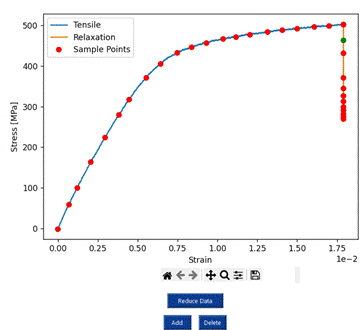
(a) (b)
Figure 7. Characterization Tab: (a) Segmentation Control Panel for Automatic Reduction and (b) Adding Data Points for Manual Reduction
View All Selected Data
View the stress vs strain curve for all selected tests (Figure 8). Users can view selected tests together by test type, or view all test types, using the drop down menu and “Plot” button above the curve.
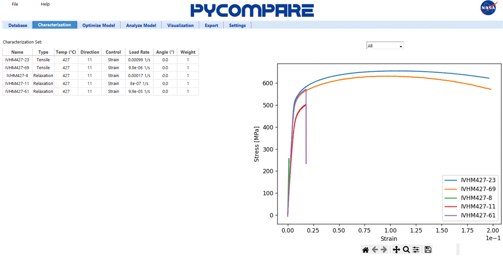
Figure 8. Characterization Tab: View All Data
Delete From Set
Delete a test from the characterization set. This will not delete the test from the project database.
5. Optimize Model Tab
The Optimize Model tab allows users
to optimize a model for the material. For a given model type, the user may be
able to select the individual reversible (viscoelastic) and irreversible
(viscoplastic) model, as well as the number of viscoelastic mechanisms ( 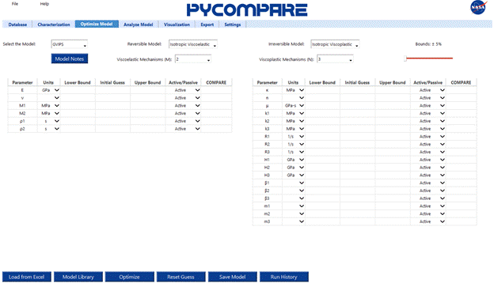 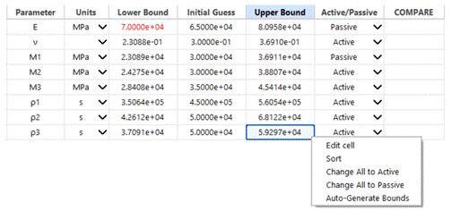 )
and viscoplastic mechanisms (). Table 1 gives a summary of the available models in PyCOMPARE. In the table, superscript
a represents the parameter for viscoelastic mechanism and
superscript
)
and viscoplastic mechanisms (). Table 1 gives a summary of the available models in PyCOMPARE. In the table, superscript
a represents the parameter for viscoelastic mechanism and
superscript
Table 1. Available Model Types in PyCOMPARE
|
Model |
Description |
Reversible Models |
Viscoelastic Parameters |
Irreversible Models |
Viscoplastic Parameters |
|
GVIPS ISO |
Multi-mechanism isotropic formulation of GVIPS |
Viscoelastic
|
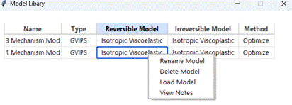
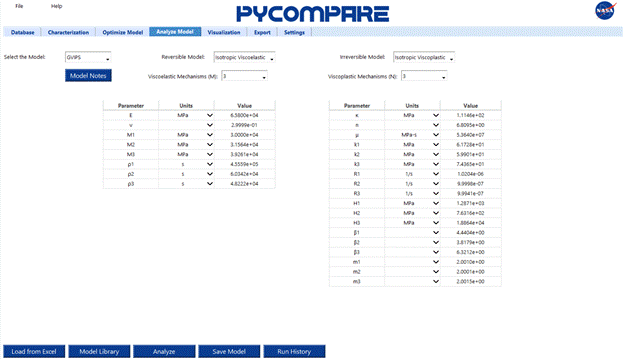 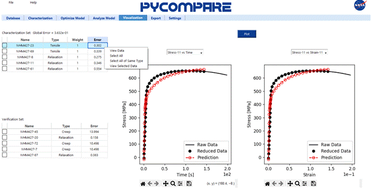 |
Viscoplastic
|
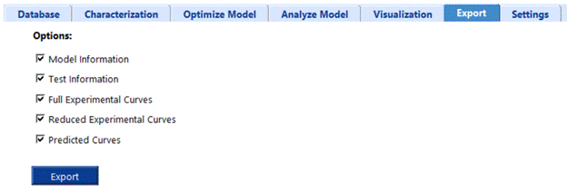
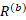
|
|
Viscoelastic w/ Damage |
|
Viscoplastic w/ Damage |
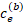 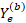 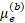 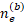 |
||
|
GVIPS TISO |
Transversely isotropic formulation of GVIPS with one viscoplastic mechanism |
Elastic |
|
Viscoplastic |
|
Based on the selection by the user for each field using the available drop down menus, two tables will automatically appear for defining the initial parameters needed by compare (Figure 9a). Both the viscoelastic (left) and viscoplastic (right) parameter tables contain seven columns:
Parameter
The viscoelastic or viscoplastic parameter.
Units
The units for all values in the row. User can edit via drop down menu.
Lower Bound
The lower bound for the parameter optimization.
Initial Guess
The initial guess for the parameter optimization.
Upper Bound
The upper bound for the parameter optimization.
Active/Passive
Indicator for whether the parameter is active (allowed to change during optimization) or passive (remains fixed during optimization). User can edit via drop down menu.
COMPARE
The COMPARE optimized parameters.
Users can directly edit the lower bound, initial guess, and upper bound cells in the table. Bounds can also be generated automatically by using the Bounds slider bar (Figure 9a), right clicking on the table, and selection “Auto-generate bounds” (Figure 9b). If a bound is invalid (i.e., the lower bound is greater than the initial guess or the upper bound is less than the initial guess) it will appear in red. Right clicking on a table also provides options to change all parameters to active or passive, or to sort alphabetically.
Once the parameters for a model have been initialized, they can be optimized by pressing the “Optimize” button. The results from COMPARE will appear in the COMPARE column. If the optimal value is at or near a bound (within 1%), the value will appear in red; otherwise, it will appear in green (Figure 10). Initial guesses and bounds should be adjusted and re-optimized until all values are green. To use the latest COMPARE result as the initial guess, press the “Reset Guess” button. The Initial Guess column will populate with the COMPARE column values, and bounds will be automatically calculated from the current Bounds slider value.
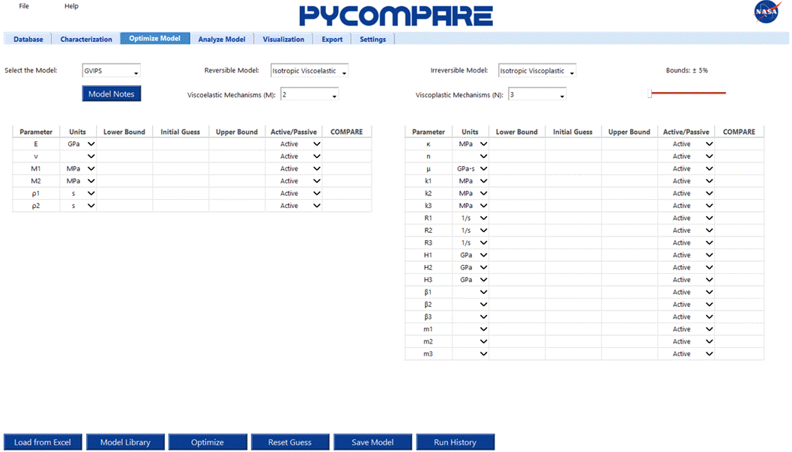
(a)
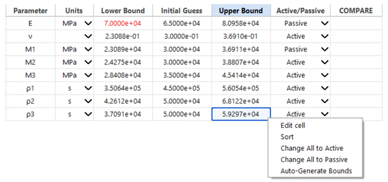
(b)
Figure 9. Optimize Model Tab: (a) Defining the model and (b) Populating the initial conditions
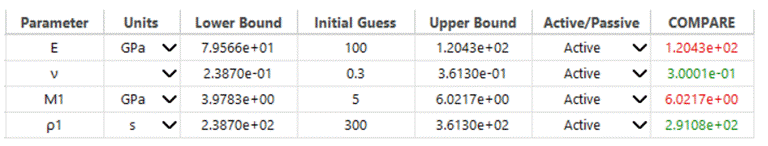
Figure 10. Optimize Model Tab: Example COMPARE results
Individual models can be saved to the project model library using the “Save Model” button. Notes can be added to a model by pressing the “Model Notes” button. Models can be loaded into PyCOMPARE using:
1. Load from Excel
Pressing the “Load from Excel” button will prompt the user to select an Excel file. The user must supply a PyCOMPARE export file with the model information tab populated.
2. Model Library
Pressing the “Model Library” button will load the model library window (Figure 11). Right clicking on any row allows the user to rename the model, delete the model from the library, load the model into PyCOMPARE, or view the model notes.
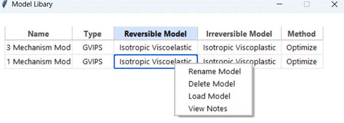
Figure 11. Optimize Model Tab: Model Library
3. Run History
Pressing the “Run History” button will load the run history window (11). The run history table displays all runs of COMPARE stored in the automatically generated log files. Right clicking on any individual row allows users to either view the model information or load the model into PyCOMPARE. Pressing “View Data” generates the parameter table (top right) and characterization set table (bottom right)
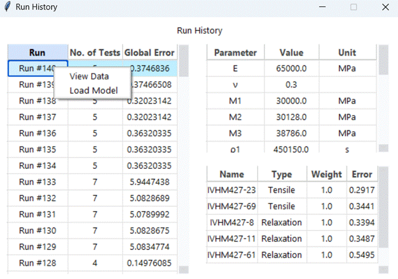
Figure 12. Optimize Model Tab: Run History
6. Analyze Model Tab
The Analyze Model tab allows users to define a model for the material without optimization (Figure 13). It contains the same options for defining the model and number of mechanisms as the Optimize Model tab, and similarly contains two tables for viscoelastic and viscoplastic mechanisms. However, only three columns exist in each:
Parameter
The viscoelastic or viscoplastic parameter
Units
The units for all values in the row. User can edit via drop down menu.
Value
The initial guess for the parameter optimization.
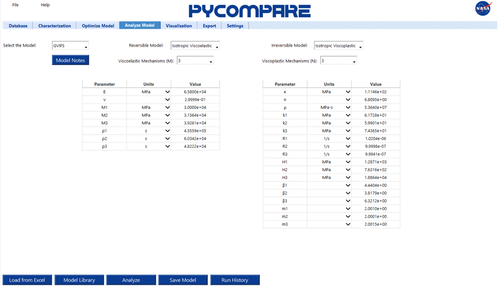
Figure 13. Analyze Model Tab: Defining the model
Pressing the “Analyze” button evaluates all tests in the characterization and verification set with the prescribed parameters without any optimization performed by COMPARE. Models can be saved using the “Save Model” button, and can be loaded into the Analyze Model tab using the same methods prescribed in the Optimize Model tab section.
7. Visualization Tab
The Visualization tab allows users to visualize the predictions made by COMPARE. Tests available for predictions are separated into the characterization set (used to optimize the model) and the verification set (used for blind predictions). Right clicking on any individual row of either the characterization or verification tables gives four options:
View Data
View the experimental and predicted curves for the individual test (Figure 14). Two plots are generated to allow side by side comparison of control and response curves for the same test. Plot quantities can be changed using the drop down menu above each plot and pressing the “Plot” button.
Select All
Select all tests in the table.
Select All of Same Type
Select all of the tests in a table that have the same type as the row selected.
View Selected Data
View the selected experimental and predicted curves (Figure 15). Experimental curves are displayed on the left and predicted curves are displayed on the right. Plot quantities can be changed using the drop down menu above the plots and pressing the “Plot” button.
The verification table has an additional option to “Evaluate All”, which evaluates all tests in the verification set with the prescribed parameters.
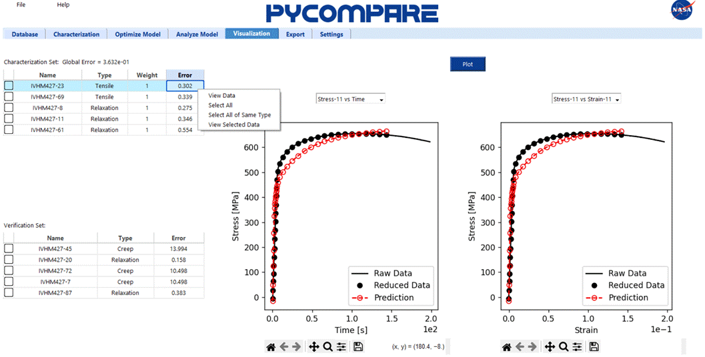
Figure 14. Visualization Tab: Viewing Individual Predictions
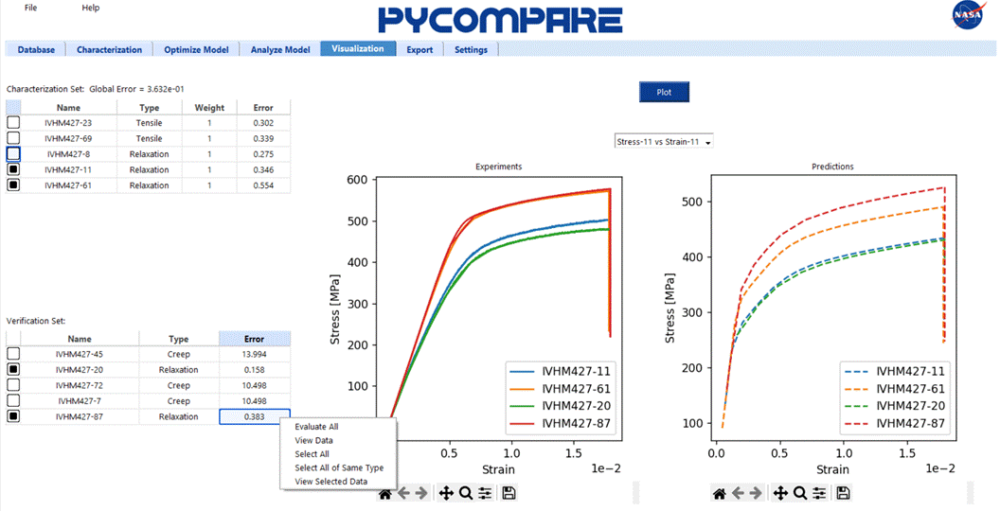
(b)
Figure 15. Visualization Tab: Viewing Multiple Predictions
8. Export Tab
The Export tab allows users to export all project results to an Excel file (Figure 16). The export template contains five pages:
Model Information
The Model Information page contains all information defining the model, including the model name, type, temperature, notes, and parameter values.
Test Information
The Test Information page contains a table of all tests in the characterization and verification data sets. For each test, the name, type, control mode, loading rate, anisotropy angle, data set (characterization or verification), weight, and error are given.
Full Experimental Curves
The Full Experimental Curves page contains the full experimental data for all tests in the characterization and verification data sets.
Reduced Experimental Curves
The Reduced Experimental Curves page contains the reduced experimental data for all tests in the characterization and verification data sets.
Predicted Curves
The Full Experimental Curves page contains the predicted simulation data for all tests in the characterization and verification data sets.
Users can check or uncheck each of the pages from the export file on the Export tab.
Figure 16. Export Tab: Options for Exporting Project Results
9. Settings Tab
The Settings tab allows users to set all directories necessary to run PyCOMPARE and download the template import and export files (Figure 17). When PyCOMPARE is installed, all directories should be automatically set. If an error occurs, users can reset a directory using an “Edit” button. For the import and export templates, users can also download a copy using the “Download” button.
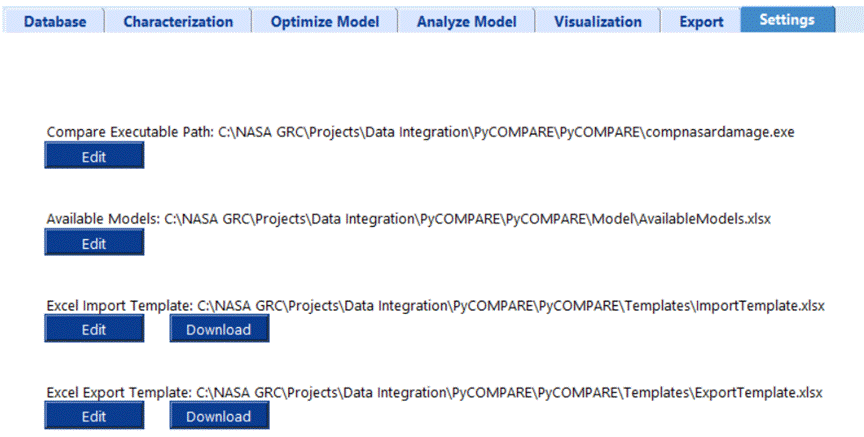
Figure 17. Settings Tab: Setting Project Directories
References
|
[1] |
P. S. Foundation, "tkinter — Python interface to Tcl/Tk," 2025. [Online]. Available: https://docs.python.org/3/library/tkinter.html. |
|
[2] |
A. Saleeb, T. Wilte, D. Trowbridge and A. Gendy, "Effective Strategy for Automated Characterization in Complex Viscoelastoplastic and Damage Modeling for Isotropic/Anisotropic Aerospace Materials," J Aerospace Eng, vol. 15, pp. 84-96, 2002. |
|
[3] |
A. Saleeb, T. Wilt, N. Al-Zoubi and A. Gendy, "An Anisotropic Viscoelastoplastic Model for Composites - Sensitivity Analysis and Parameter Estimation," Composites: Part B, vol. 34, pp. 21-39, 2003. |
|
[4] |
S. Arnold and A. Saleeb, "On the Thermodynamic Framework of Generalized Coupled Thermoelastic-Viscoplastic-Damage Modeling," Int. J. Plast., vol. 10, no. 3, pp. 263-278, 1994. |
|
[5] |
Saleeb, A.F, et al., "A General Hereditary Multimechanism-Based Deformation Model With Application to the Viscoelastoplastic Response of Titanium Alloys," Int. J. Plast., vol. 17, no. 10, pp. 1305-1350, 2001. |
|
[6] |
A. Saleeb and S. Arnold, "A General Reversible Hereditary Constitutive Model: Part I Thoeretical Development," JEMT, vol. 123, pp. 51-64, 2001. |
|
[7] |
S. Arndol, A. Saleeb and C. M.G, "A General Reversible Hereditary Constitutive Model: Part II Application to Titanium Alloys," JEMT, vol. 123, pp. 65-73, 2001. |
|
[8] |
S. Arnold and B. Lerch, "Development, Characterization, and Validation of Elevated-Temperature Constitutive Models: Deformation and Damage," NASA/TP-20250003948, 2025. |
|
[9] |
J. Stuckner, B. Harder and T. M. Smith, "Microstructure segmentation with deep learning encoders pre-trained on a large microscopy dataset," bpj Computational Materials, vol. 8, no. 200, 2022. |
|
[10] |
J. Stuckner, K. Fre, I. McCue, M. J. Demkowicz and M. Murayama, "AQUAMI: An open source Python package and GUI for the automatic quantative analysis of morphologically complex muliphase materials," Comput. Mater. Sci, vol. 139, pp. 320-329, 2017. |
|
[11] |
A. Kirillov, E. Mintun, N. Ravi, H. Mao, R. C, L. Gustafson, T. Xiao, S. Whitehead, A. C. Berg, W. Y. Lo and P. G. R. Dollar, "Segment Anything," in IEEE/CVF International Conference on Computer Vision (ICCV), 2023. |